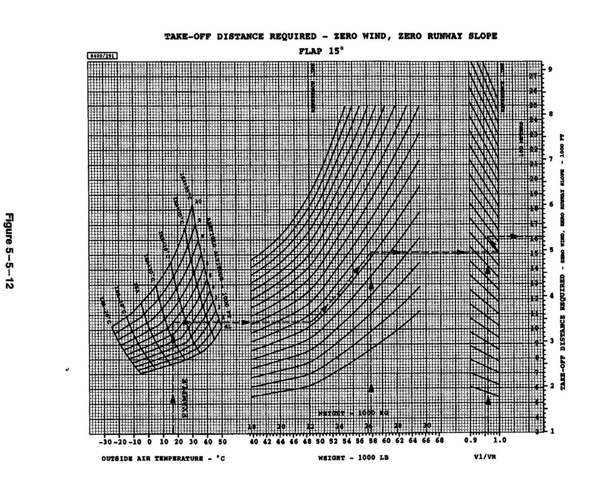
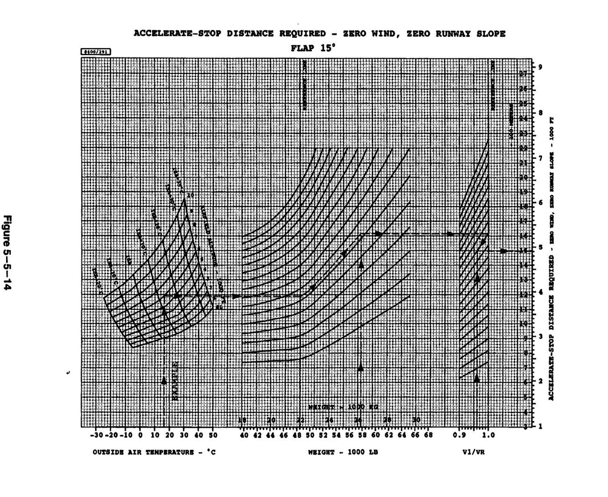

Lesson 04: Take-off Field Lengths — TOR, TOD and ASD
Learning objectives
- Correct the available distances for wind and slope.
- Find the weight allowed by the take-off run, take-off distance and accelerate-stop distance.
- Identify the limiting requirement.

Wind and slope correction
The field length charts are drawn for zero wind and zero slope. The first step converts the actual distance available into an equivalent zero-wind, zero-slope distance using the wind and slope correction charts.

Take-off run and take-off distance
With the corrected distance, the TOR and TOD charts give the maximum weight for the OAT and pressure altitude. In the exercise, the 4,000 ft runway corrected to about 3,200 ft: the take-off run allows about 56,200 lb and the take-off distance about 55,000 lb.


Accelerate-stop distance
The ASDA is corrected the same way (4,000 ft became about 3,300 ft), then the accelerate-stop chart gives the weight: about 49,000 lb.


The limiting requirement
| Requirement | Weight allowed (exercise) |
|---|---|
| Take-off run | 56,200 lb |
| Take-off distance | 55,000 lb |
| Accelerate-stop distance | 49,000 lb — limiting |
On a short runway without stopway, the accelerate-stop distance is often limiting. The next lesson shows how a V1 reduction (V1/VR split) recovers weight.
The figures above are a classroom exercise from the type-rating course. In operation use the company runway analysis or EFB tool with the actual conditions.
Key takeaways
- Correct distances for wind and slope first.
- Read the weight from the TOR, TOD and ASD charts; the lowest limits.
- Short runway without stopway: often ASD-limited.
Knowledge check
In the exercise, which requirement limited the take-off weight?
- Take-off run
- Take-off distance
- Accelerate-stop distance
- WAT
Answer: C. The ASD allowed 49,000 lb, lower than the TOR (56,200 lb) and TOD (55,000 lb).